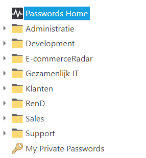

Best Practices Admin accounts
Voor werkzaamheden op servers beschikken alle leden van IT Operations en de Servicedesk over een admin-account.
Alle Developers die bereikbaarheidsdienst draaien en de lead Developers beschikken ook over een admin-account.
Tot slot geldt dat ook nog voor een aantal R&D-medewerkers.
Voor het kunnen beheren van servers is de admin-account-naam : admin_voornaam.achternaam@monta.nl.
Voor het kunnen beheren van servers in VMWare is de admin-account-naam : admin_voornaam.achternaam@vsphere.local.
Deze twee accounts zijn onafhankelijk van elkaar.
Omdat een admin-account door niet iedereen frequent gebruikt wordt volgen hier wat best practices om er voor te zorgen dat je het de admin-account-naam en het wachtwoord kunt onthouden en dat het toch veilig is.
- Wijzig het wachtwoord voor het admin-account tegelijk met het wijzigen van het gewone account. Dan wordt je er niet onverwachts mee geconfronteerd dat je wachtwoord verlopen is.
- Kies voor je admin account een ander wachtwoord dan voor je gewone account
- Leg je admin wachtwoord vast in het persoonlijke gedeelte in Passwordstate "My private passwords".

Omdat Passwordstate beveiligd is met MFA is dat veilig genoeg. - Het wachtwoord voor het admin-account voor VMWare verloopt niet. Je kunt hiervoor een complex wachtwoord instellen en dit ook in Passwordstate "My private passwords" vastleggen.